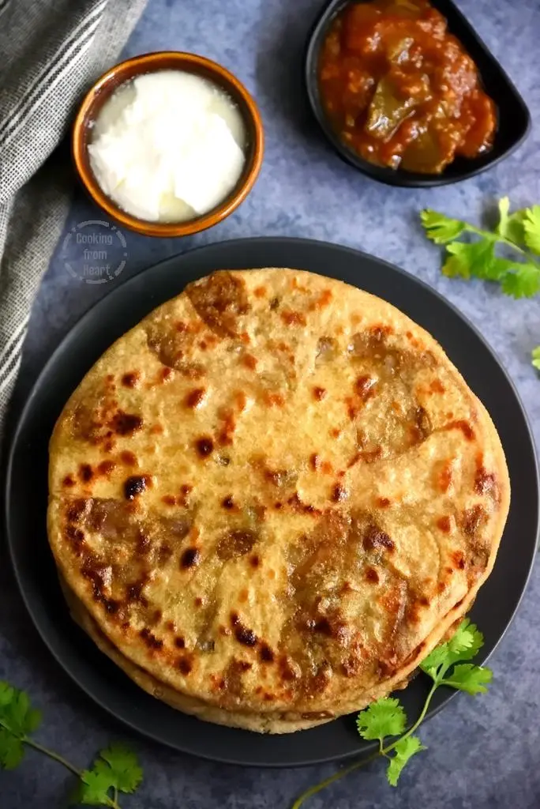

Aloo-Parantha

Description
Stuffed flatbread made with whole wheat flour, filled with spiced mashed potatoes, rolled thin, cooked on a
griddle with oil or ghee until golden brown, and served hot with yogurt or pickles.
Ingredients
Dough:
- Whole wheat flour
- Water
- Salt
- Oil
Filling:
- Potatoes (boiled, peeled, and mashed)
- Green chilies (finely chopped)
- Fresh coriander leaves (cilantro), chopped
- Cumin seeds
- Red chili powder
- Salt
Steps
- Prepare dough: Mix whole wheat flour, salt, water; knead smooth, rest 15-20 min.
- Prepare filling: Combine mashed potatoes, chilies, coriander, cumin, chili powder, salt.
- Assemble: Divide dough, roll into 4-5" circle, add filling, seal edges, flatten, roll to 7-8" circle.
- Cook: Heat griddle, cook paratha with oil/ghee until golden brown.
- Serve hot with yogurt, pickles, or chutney.